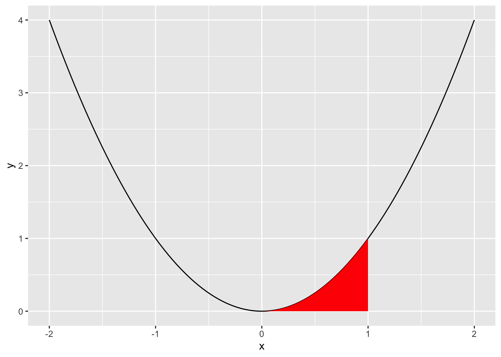

Last time, we learned about calculus as a way to deal with continuity usefully and discussed derivatives as one of the primary operations in calculus.
Today, we review two remaining topics. First, we revisit derivatives to understand how computers calculate them. Second, we discuss integrals, or “anti-derivatives,” as the other important operation in calculus.
2 How do computers calculate derivatives?
In quite a few statistics and machine learning problems, computers need to compute derivatives of arbitrarily complex functions, perhaps millions of times. How do they do it? (see Baydin et al. 2018 for discussion of these three approaches)
Symbolic differentiation: automatically combine the rules of differentiation (power rule, product rule, etc.). Math solvers like WolframAlpha or Mathematica do
Numerical differentiation: infer the derivative by computing the function at different sample values (like we did with \(y=x^2\) before. For example, this is what the R function optim() does behind the scenes.
Automatic differentiation: track how every function is constructed from (differentiable) elementary computer operations (e.g., binary arithmetic), and get the result using the chain rule. Implemented in the torch R package, the TensorFlow, PyTorch, and JAX Python libraries, and the ReverseDiff.jl and Zygote.jl Julia packages.
3 Optimization
Optimization allows us to find the minimum or maximum values (or extrema) a function takes. It has many applications in the social sciences:
Ordinary Least Squares (OLS): Focuses on minimizing the squared errors between observed data and model-estimated values
Maximum Likelihood Estimation (MLE): Focuses on maximizing a likelihood function, given observed values.
3.1 Extrema
Informally, a maximum is just the highest value a function takes, and a minimum is the lowest value. We use the term “extrema” to define a general family of extreme values of a function.
In some situations, it can be easy to identify extrema intuitively by looking at a graph of the function.
Maxima are high points (“peaks”)
Minima are low points (“valleys”)
We can use derivatives (rates of change!) to get at extrema.
3.2 Critical points and the First-Order Condition
At critical points (or stationary points), the derivative is zero or fails to exist. At these, the function has usually reached a (local) maximum or minimum.
At a maximum, the function must be increasing before the point and decreasing after it.
At a minimum, the function must be decreasing before the point and increasing after it.
Local extrema occur at critical points, but not all critical points are global extrema. For instance, sometimes the graph is changing between concave and convex (“inflection points”). Or sometimes the function is not differentiable at that point for other reasons.
We can find the local maxima and/or minima of a function by taking the derivative, setting it equal to zero, and solving for \(x\) (or whatever variable). This gives us the First-Order Condition (FOC).
\[FOC: f'(x)=0\]
3.3 Second-Order Condition
Notice that after this we only know that there is a critical point. BUT we don’t know if we’ve found a maximum or minimum, or even if we’ve found an extremum.
To determine whether a we are seeing a (local) maximum or minimum, we can use the Second Derivative Test:
Start by identifying \(f''(x)\)
Substitute in the stationary points \((x^*)\) identified from the FOC.
\(f''(x^*) > 0\) we have a local minimum
\(f''(x^*) < 0\) we have a local maximum
\(f''(x^*) = 0\) we (may) have an inflection point - need to calculate higher-order derivatives (don’t worry about this for now)
Collectively these give us the Second-Order Condition (SOC).
3.4 Local or global extrema?
Now when it comes to knowing whether extrema are local or global:
Here we use the Extreme value theorem, which states that if a real-valued function is continuous on a closed and bounded (finite) interval, the function must have a global minimum and a global maximum on that interval at least once. Importantly, in this situation the global extrema exist, and they are either at the local extrema or at the boundaries (where we cannot even find critical points).
So to find the minimum/maximum on some interval, compare the local min/max to the value of the function at the interval’s endpoints. So, if the interval is \((-\infty, +\infty)\), check the function’s limits as it approaches \(-\infty\) and \(+\infty\).
4 Integrals
Derivatives allow us to calculate the instantaneous change (slope) in a continuous function at a given point. What if, instead of describing change at specific points, we wanted to characterize the net effect of change of a function. With what we know so far, we would start by calculating slopes at different parts of the function and then summing them all up together, but we have a continuous function, so simply adding up at discrete values would not work.
That is where integration comes in. Informally, we can think of integrals as the flip side of derivatives.
We can motivate integrals as a way of finding the area under a curve. Sometimes finding the area is easy. What’s the area under the curve between \(x=-1\) and \(x=1\) for this function?
The are is 1/3, we will do this together when we meet, but the essence of the answer is drawing the function and then calculating the area of a rectangle.
Normally, finding the area under a curve is much harder. But this is basically the question behind integration.
4.1 Integrals are about infinitesimals too
Let’s say we have a function \(y = x^2\) And we want to find the area under the curve from \(x=0\) to \(x=1\). How would we do this?
library(tidyverse) # could also just do library(ggplot2)ggplot() +# draw main functionstat_function(fun =function(x){x ^2}, xlim =c(-2, 2)) +# fill area under the curve between x = 0 and x = 1geom_area(mapping =aes(x =0), stat ="function",fun =function(x){x ^2}, xlim =c(0, 1), fill ="red")

One way to approximate this area is by drawing narrow rectangles that cover the area in red.
That would be a rough approximation, but it gets better and better the narrower the rectangles are
\[
Area = lim_{\Delta x \to 0}\sum_i^n{f(x) \cdot \Delta x}
\]
, where \(\Delta x\) is the width of the rectangles and \(n\) is their number. In words, this says that the are is equal to the sum of all the rectangles when the limit of the rectangle with approximates zero.
This is actually one way to define the definite integral, \(\displaystyle\int_a^bf(x)dx\) (also known as the Riemann integral). We’ll learn how to compute these in a few moments.
4.2 Indefinite integrals as antiderivatives
The indefinite integral, also known as the antiderivative, \(F(x)\) is the inverse of the function \(f'(x)\).
\[F(x)= \displaystyle\int f(x) \text{ } dx\]
Being inverse operations means that if you apply them in sequence you are back to the original place, so if you take the derivative of \(F(x)\), you wind up back at \(f(x)\).
\[F' = f \text{ or } \displaystyle\frac{dF(x)}{dx} = f(x)\]
This definition is annoyingly recursive, but useful enough to characterize the inverse operation of a derivative.
To illustrate, what is the antiderivative for a constant function \(f(x) = 1\)? Is there just one? (this example comes from Moore and Siegel, 2013, p. 137).
By power rule, we know the derivative of x is 1. So \(F(x) = x\) is one anti-derivative. But it is not the only one! The derivatives of $F(x) = x + 10 $ and \(F(x) = x + 100\) are also 1. We can anticipate this and just say that the anti-derivative of \(f(x) = 1\) i just \(F(x) = x + C\) where \(C\) is any constant number. We call \(C\) the “constant of integration.”
What we just did is a process called anti-differentiation. We can use this concept to help us solve definite integrals!
4.3 Solving definite integrals
There are two kinds of integrals, an indefinite integral is just the anti-derivative as defined above, we which express as \(\displaystyle\int f(x)dx = F(x)\), meaning that the output is a function.
Definite integrals instead return a value that represents the are under a curve, which means we need to specify a range to evaluate the area in question.
One way to calculate definite integrals, known as THE FUNDAMENTAL THEOREM OF CALCULUS is shown below:
In words, the definite integral from point \(a\) to \(b\) of \(f(x)\) with respect to \(dx\) is the difference of the anti-derivatives evaluated at the upper and lower limit.
This implies that to calculate a definite integral, we first determine the antiderivative (indefinite integral) of \(f(x)\) (and represent it \(F(x)\)), substitute the upper limit first and then the lower limit one by one, and subtract the results in order.
4.4 Rules of integration
Many of the rules of integration have counterparts in differentiation.
Coefficient rule:\(\displaystyle\int c f(x)\,dx = c \int f(x)\,dx\)
The final two rules are analog to the product rule and the chain rule:
Integration by parts:\(\displaystyle \int f(x)g'(x)\,dx = f(x)g(x) - \int f'(x)g(x)\,dx\)
This rule allows you to change around your functions. If you cannot integrate \(f(x)g'(x)\) but you can integrate \(g'(x)\) and \(f'(x)g(x)\) then it is useful. This applicable when \(g'(x)\) is something like \(e^x\) that does not get more complex when you integrate, while \(f(x)\) is something like \(x\) that simplifies when you differentiate it.
Integration by substitution:
\[
\begin{aligned}
1.& \text{ Have }\displaystyle \int f(g(x))g'(x)\,dx \\
2.& \text{ Set u=g(x)} \\
3.& \text{ Compute } \int f(u)\,du \\
4.& \text{ Replace u for g(x)}
\end{aligned}
\]
In words, we can change variables to an entirely different function if it helps us to compute the integral. We do this when the integral contains a composite function that one cannot integrate easily, like \(f(x) = \displaystyle \frac{1}{2\pi} x e^{-\frac{x2}{2}}\), which happens to be the probability distribution function of a standard normal distribution multiplied by x.
If this was a Calculus I course, we would spend a whole midterm practicing tricky problems involving integration by parts or by substitution. We will not bothers with this at math camp.
4.5 An example
Remember our function \(y=x^2\) and our goal of finding the area under the curve from \(x=0\) to \(x=1\). We can describe this problem as \(\displaystyle \int_0^1 x^2 dx\)
Note how the constants of integration cancel out. One way to think about this is that the area under a curve would not change if you shift that curve’s position along the horizontal axis.